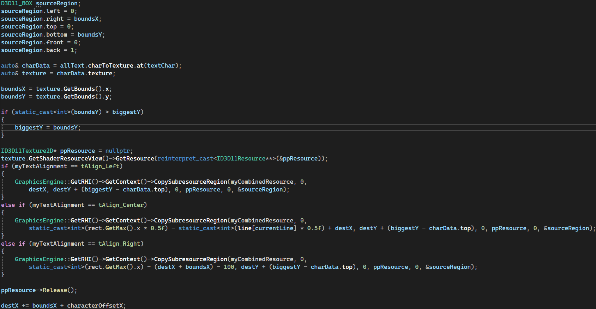
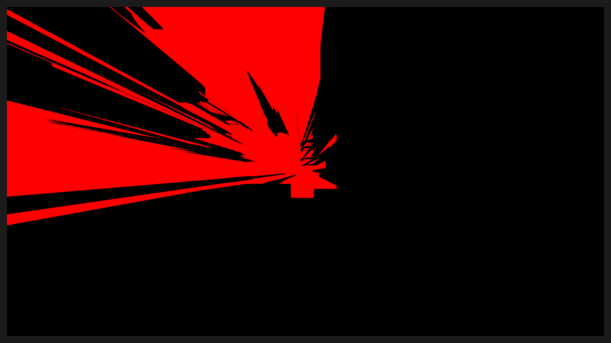
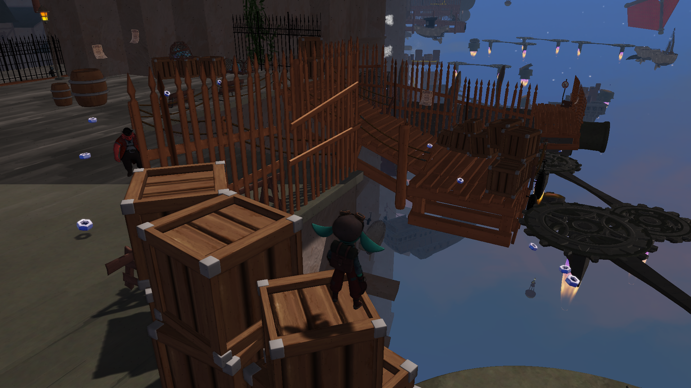
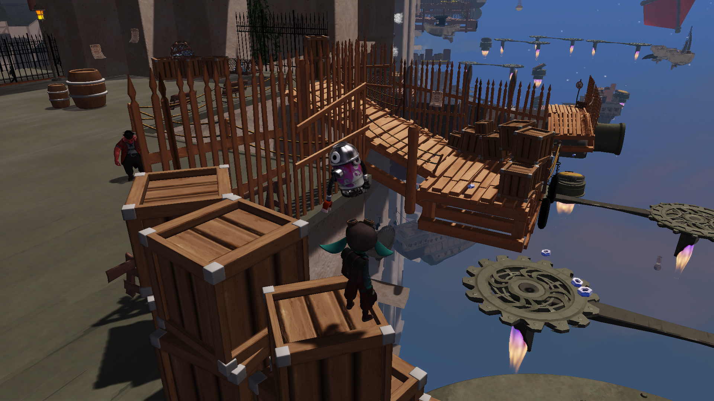

Contibution
Text Renderer
Cascaded Shadow Maps
Dialouge
This game was made in
TRK (our inhouse engine at VRAK)
TRK (our inhouse engine at VRAK)
Text Renderer
In the previous project P6 we did not have any type of text rendering which made it so that the graphics
team had to make text as sprites then we can render these with our sprite renderers.
We wanted to let the graphics team work more on models, textures, buttons and other graphical elements and
we handle the text in engine instead of outside. For this I implemented FreeType, a free and open source c
font render engine.
With freetype we could define each character as a textureResource in a map wich has the key of a char. With
this we then use the DX11 function
CopySubresourceRegion
to copy the contents of the char we wanted that is mapped to a texture and paste it to a new texture that
had been inited before with a total character pixel offset to place all the character correctly.

Script to copy a tetxure from map to a bigger combined text texture
When we have copied to the resource we set it as a Shader Resource View and then use it in a text pixel shader, we sample color from the texture and only return the red channel and multiply in albedo tint to be able to change color of the text.
shader for text renderer
This is the result of the above
Text that says "Clanking Orphanage" with font Comic Sans
Cascaded Shadow Maps
The choosen game concept and game theme was space pirates. with this comes alot of open area which with the
old shadowing techniche will be covered i darkness or be completely lit up which both looks wrong.
The solution to this are cascaded shadow maps. The implementation of cascaded shadow maps in this project
was a real hassle and took longer than i thought it would.
Helping me i had the guest article on Learn OpenGL at Cascaded Shadow Maps LearnOpenGL
When i was implementing these cascaded shadow maps i got this result at the start

Shadow map from one of the cascade cam
The result looks very bad since it almost looks like i have way too much FOV even when this should be zero
with a directional light. I knew something was wrong with our othographic camera because compared to one
online they were completely different so i had to fix it.
While browsing through the DX11 snippet for Cascaded shadow maps there was one slight difference in the orthographics cam we create vs what they create
we did
while the DX11 snippet did
When i finaly saw this and fixed it, everything worked.

While browsing through the DX11 snippet for Cascaded shadow maps there was one slight difference in the orthographics cam we create vs what they create
we did
- myClipSpace(3, 4) = -nearPlane / (farPlane - nearPlane);
while the DX11 snippet did
- myClipSpace(4, 3) = -nearPlane / (farPlane - nearPlane);
When i finaly saw this and fixed it, everything worked.
Before

After
As we can see in the before and after, the effect is amazing and we get so much more color and shdowing
thoughout the world
- bool GraphicsEngine::SetShadowCamera()
- {
- if (!myDirectionalLights.empty())
- {
- auto vec = MainSingleton::Get()->mySceneManager->GetCamera() >GetCameraData().GetFrustumCornersWorldSpace();
- std::vector<std::pair<CU::Vector3f, CU::Vector3f>> minMax;
- constexpr float zMult = 1000.0f;
- auto& data = myDirectionalLights[0]->GetData();
- for (int i = 0; i < vec.size(); i++)
- {
- CU::Vector3f center;
- for (auto& vP : vec[i])
- {
- center += vP;
- }
- center /= static_cast<float>(vec[i].size());
- data.myLightViews[i] = CU::Matrix4x4f::LookAt(center - myDirectionalLights.front()->GetData().direction, center, CU::Vector3f(0.f, 1.f, 0.f));
- minMax.emplace_back();
- minMax.back().first.x = std::numeric_limits<float>::max();
- minMax.back().first.y = std::numeric_limits<float>::max();
- minMax.back().first.z = std::numeric_limits<float>::max();
- minMax.back().second.x = std::numeric_limits<float>::lowest();
- minMax.back().second.y = std::numeric_limits<float>::lowest();
- minMax.back().second.z = std::numeric_limits<float>::lowest();
- for (auto& vP : vec[i])
- {
- const auto trf = vP * data.myLightViews[i];
- minMax.back().first.x = std::min(minMax.back().first.x, trf.x);
- minMax.back().first.y = std::min(minMax.back().first.y, trf.y);
- minMax.back().first.z = std::min(minMax.back().first.z, trf.z);
- minMax.back().second.x = std::max(minMax.back().second.x, trf.x);
- minMax.back().second.y = std::max(minMax.back().second.y, trf.y);
- minMax.back().second.z = std::max(minMax.back().second.z, trf.z);
- }
- if (minMax.back().first.z < 0)
- minMax.back().first.z *= zMult;
- else
- minMax.back().first.z /= zMult;
- if (minMax.back().second.z < 0)
- minMax.back().second.z /= zMult;
- else
- minMax.back().second.z *= zMult;
- }
- auto* curentCamHolder = myCurrentCamera;
- for (int i = 0; i < vec.size(); i++)
- {
- if (!myDirectionalLights.size())
- return false;
- myCommandList.Enqueue([&, index = i, miniMax = minMax, view = data.myLightViews]()
- {
- GraphicsEngine::GetRHI()->GetContext()->OMSetRenderTargets(0, nullptr, myShadowMap->GetDepthStencilView(index).Get());
- GraphicsEngine::GetRHI()->GetContext()->ClearDepthStencilView(myShadowMap->GetDepthStencilView(index).Get(), D3D11_CLEAR_DEPTH, 1.0f, 0);
- std::wstringstream stream;
- stream << "Shadow map nr: " << index;
- myRHI->BeginRenderTag(stream.str().c_str());
- CU::Camera camera;
- auto val = miniMax[index];
- auto& data = myDirectionalLights[0]->GetData();
- float offset = 0;
- float left = val.first.x;
- float right = val.second.x;
- float bottom = val.first.y;
- float top = val.second.y;
- float nearPlane = val.first.z;
- float farPlane = val.second.z;
- camera.Init(left - offset, right + offset, bottom - offset, top + offset, nearPlane, farPlane);
- auto& timer = CU::Time::Get();
- myFrameBuffer.myCameraPosition = view[index].GetRowVector(4);
- myFrameBuffer.myInverseViewMatrix = view[index];
- myFrameBuffer.myProjectionMatrix = camera.GetClipSpace();
- myFrameBuffer.myScreenResolution = GetResolution();
- UpdateAndSetConstantBuffer(ConstantBufferType::FrameBuffer, myFrameBuffer);
- data.myLightProjections[index] = myFrameBuffer.myProjectionMatrix;
- D3D11_VIEWPORT viewport = {};
- viewport.TopLeftX = 0;
- viewport.TopLeftY = 0;
- viewport.Width = 4096;
- viewport.Height = 4096;
- viewport.MaxDepth = 1.0f;
- myRHI->GetContext()->RSSetViewports(1, &viewport);
- GraphicsEngine::GetRHI()->GetContext()->PSSetShader(nullptr, nullptr, 0);
- });
- MainSingleton::Get()->mySceneManager->RenderCurScene();
- myCommandList.Enqueue([&, index = i]()
- {
- myRHI->EndTag();
- });
- }
- myCommandList.Enqueue([&]()
- {
- GraphicsEngine::GetRHI()->GetContext()->OMSetRenderTargets(0, nullptr, nullptr);
- });
- GraphicsEngine::GetRHI()->GetContext()->OMSetRenderTargets(0, nullptr, nullptr);
- this->SetFrameBuffer(curentCamHolder);
- return true;
- }
- return false;
- }
Full shadow cascade code
Dialouge
We wanted Stella(Main character) to be able to interact with the world like the pritate npc's in the world.
This was perfect since i had already implemented the text renderer into our engine then i can use this to
slowly type out the text that the character should say.

Showing typing NPC
Because we already use unreal engine to export the level, then i created a component for this where you can input what text dialouge should be said, also time between each character is would be typed.
An image showing the unreal editor for dialouge component
Closing Thoughts
this was a very fun game to develop and work on i got to learn alot of new skills and also some things to
avoid at times. Most interesting thing i learned about was the DX11 CopySubresourceRegion function and how
good it can be.
Play our game by following the Link below
Stella & Orbit: Take Flight